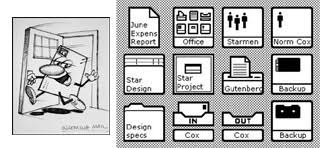

8010 Information System
Become standard in personal computers, including a bitmapped display, a window-based graphical user interface, icons, folders, mouse (two-button)
Become standard in personal computers, including a bitmapped display, a window-based graphical user interface, icons, folders, mouse (two-button)